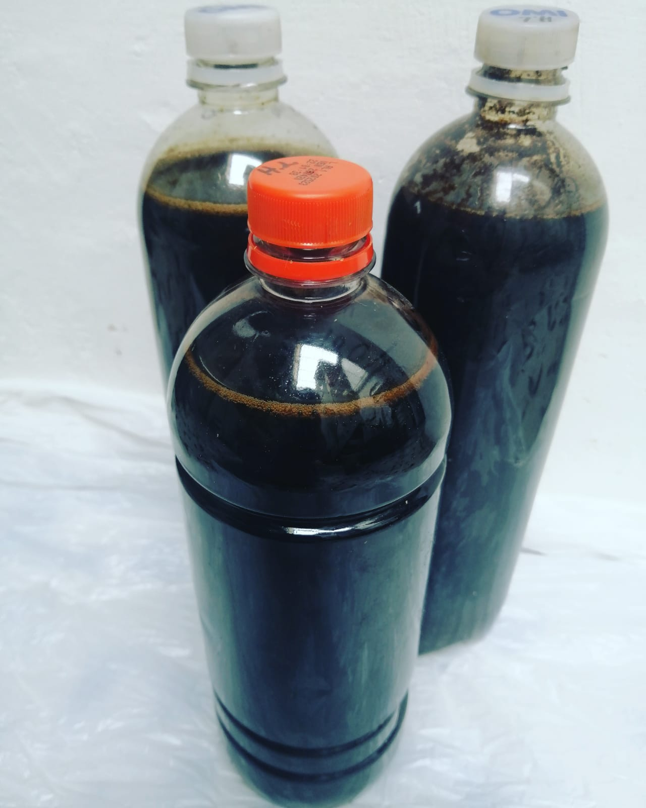

Ecompost
Inicio
Pagos
Tienda en línea
Ecompost
Inicio
Pagos
Tienda en línea
Fertilizante 100% orgánico producto del lombricompostaje, ideal para plantas en etapa de crecimiento, mejora pH del suelo, equilibra el desarrollo de hongos presentes, aumenta producción de cultivos y disminuye la contaminación de químicos en el suelo y afluentes de agua.
Se aplica de forma tópica en el sustrato o mezclado en este.
Debe ser utilizado en una proporción 1(humus)/10(Agua) para evitar sobrefertilización.
$12.000 COP c/u (Contiene 1Kg o 1L)